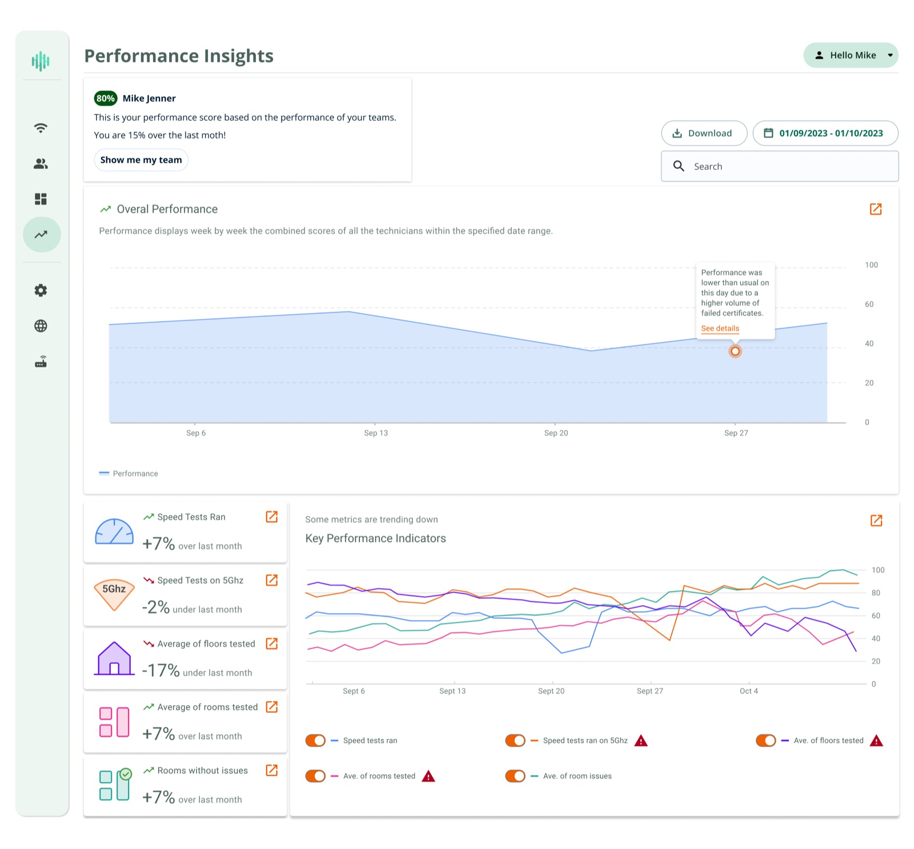
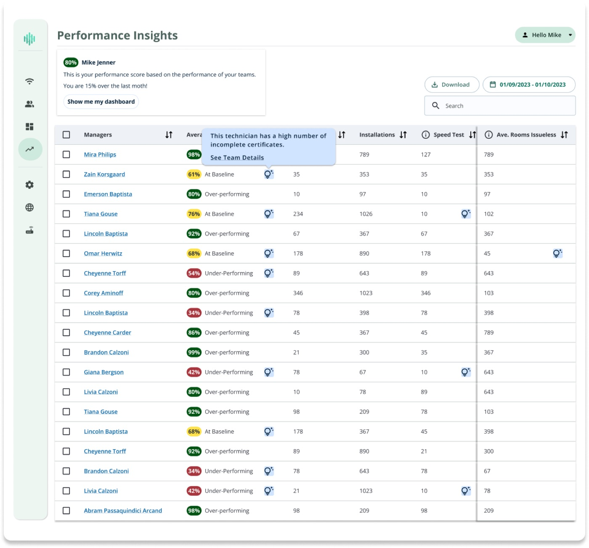
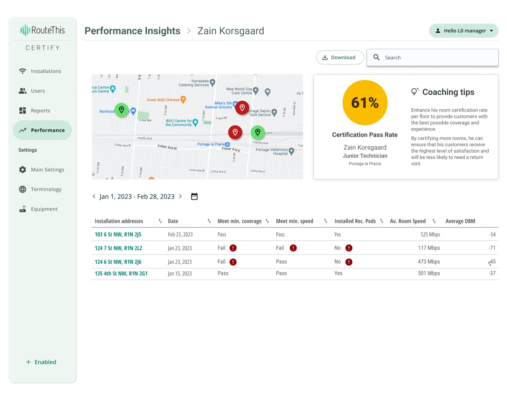

Role: Product Designer
A multi-level management dashboard that empowers Internet Service Providers to monitor, analyze, and ensure technicians deliver the highest quality internet installations to customers.
01
ISPs struggled to maintain consistent installation quality across multiple teams, thousands of technicians and thousands of Installation Certificates. Managers had no overall visibility into the installation data, leading to customer complaints, repeat service calls, and inability to identify training needs.
02
The project focused on a desktop platform for Internet Service Providers, aimed at ensuring technicians leave customers with the highest quality internet connections. Managers needed tools to monitor team performance, track installation quality, and identify areas for improvement. Challenges included handling large volumes of data across a multi-level management structure, aligning features with existing workflows, and addressing UX inconsistencies.
Key Constraint
The platform had to present complex QoI (Quality of Install) data clearly and intuitively, enabling managers to make actionable decisions without overwhelming them.
03
To build an effective monitoring solution, I mapped the existing workflows and metrics. We identified five key indicators that managers rely on to evaluate installation quality. By interviewing managers and technicians, I gained insight into pain points such as difficulty identifying struggling technicians, tracking metric trends, and understanding which actions would drive improvements.
This research informed a holistic view of the system's goals, user needs, and operational constraints.
04
The design process began with analyzing workflows, identifying UX gaps, and defining user needs. I created personas and journey maps for managers to understand how they interact with installation data. Low, and high-fidelity prototypes were developed for dashboards and table view workflows.
05
06
The final Certify Admin platform empowers managers to lead teams more confidently. It provides a comprehensive QoI dashboard with intuitive metrics visualization, actionable insights, and trend tracking. Allowing managers to quickly spot issues, guide technicians, and optimize overall installation quality.


